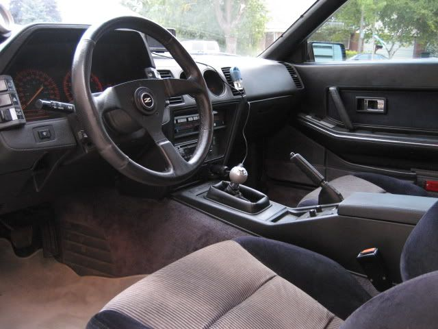

-
The 71C I had was already ripped up by whoever I bought it from. The rubber part, as well as the actual metal threaded rod which holds the shift knob was gone. Has anyone threaded that and liked it? It looks a little too low, and it's a pain to shift with.
I'm about to weld part of the auto brake pedal to the thing. Has anyone else welded anything on it? How high did you make it? Pics?BLOZ UP.com
It is not recommended to confirm proper installation by driving into walls or other barriers as this could cause personal injury or damage to the vehicle. -
Re: Who's gotten rid of the shifter rubber isolator thing?
I did the same with my 30a shifter. Still feels like my dick in cold weather so i will have to do something to make the shift shorter.Bolt on, fast, z31. You can only pick two.
Old weaksauce numbers: 391hp/433tq

-
Re: Who's gotten rid of the shifter rubber isolator thing?
:huh:Matt89 wrote: I did the same with my 30a shifter. Still feels like my dick in cold weather so i will have to do something to make the shift shorter.BLOZ UP.com
It is not recommended to confirm proper installation by driving into walls or other barriers as this could cause personal injury or damage to the vehicle. -
Re: Who's gotten rid of the shifter rubber isolator thing?
yeah people have done that before… it'd be way way too short IMO.
Hit up teh ebayz for a cheap short shifter to remedy the problem.

1988 300zxt. gt35, stance, etc. Wheels: Varrstoen ES2 18x9.5 et-13 225/40. 18x10.5 et0 245/40
1990 jetta vr6'd -
Re: Who's gotten rid of the shifter rubber isolator thing?
I pulled the threaded part off, and shortened it, and then welded it back on to the part that sticks into the tranny. It is decently short now but not a short shifter by any means.
I've never under stood the appeal of super short shifters anyways though.85 Z31 6.0 LSX turbo 766whp/792wtq
04 GTO, LS6, big cam, porting, N20… underway for summertime daily driver. -
Re: Who's gotten rid of the shifter rubber isolator thing?
Me neither, this thing is way too short. I think welding some more material on it is the only way to make it bearable.BLOZ UP.com
It is not recommended to confirm proper installation by driving into walls or other barriers as this could cause personal injury or damage to the vehicle. -
Re: Who's gotten rid of the shifter rubber isolator thing?
how do you take the black part off anyway? i was gonna cut a shifter from a 240Z and weld it on the Z31 shifter so i can use 240Z shifter nobs and boosts.
he gives me shit all the time about the money i spend on my car but he simply doenst understand what type of "high" you get from watching a stock car transform into something alive with as much emotion and feelings as any human.Originally posted by PurePontiacKid -
Re: Who's gotten rid of the shifter rubber isolator thing?
Scratch that, now that I think of it my brothers is an early '84. Somewhere I heard some '84s have different (smaller) threads, but it obviously isnt the NAs?New 2 Z wrote: how do you take the black part off anyway? i was gonna cut a shifter from a 240Z and weld it on the Z31 shifter so i can use 240Z shifter nobs and boosts.- VG30DET (HE341) 86 300ZX - 1982 280ZX Turbo - Headered NA 1986 300ZX 2+2 - 2000 Xterra - -
Re: Who's gotten rid of the shifter rubber isolator thing?
[quote]michaelp wrote:i would not know :-?Originally posted by New 2 Z
when I bought my Z is came with a 84 N/A tranny and so with that i did my auto2manual swap, but honestly I'd love to have a 240Z shifter and boot.
http://i232.photobucket.com/albums/ee25 … rior-2.jpg
he gives me shit all the time about the money i spend on my car but he simply doenst understand what type of "high" you get from watching a stock car transform into something alive with as much emotion and feelings as any human.Originally posted by PurePontiacKid -
Re: Who's gotten rid of the shifter rubber isolator thing?
The last shifter I had, which was on a T5, I cut most of it off and then I think I ground the rest.New 2 Z wrote: how do you take the black part off anyway? i was gonna cut a shifter from a 240Z and weld it on the Z31 shifter so i can use 240Z shifter nobs and boosts.BLOZ UP.com
It is not recommended to confirm proper installation by driving into walls or other barriers as this could cause personal injury or damage to the vehicle. -
Re: Who's gotten rid of the shifter rubber isolator thing?
MSA sells those kinds of knobs threaded for our transmissions…Damn dirty angels....these cars!
Current Daily Driver - 86 Turbo.
Under the cover - THE BANANA… that needs to be re-energized.
sigpic -
Re: Who's gotten rid of the shifter rubber isolator thing?
I just did this. I had intended on just cutting the threads off and re-threading the remaining part. Well that is the strongest metal I have seen!! So I ended up taking my propane torch and heating up the outside of the shaft and pulled that peice off, leaving me with a short piece covered in rubber. I cut off the top three rubber bushing parts (you will see what I mean when you get there) and threaded the remaining rod. I did have to grind a little to allow my Die to start. I went with a 1/2x20 thread pitch since that is what my shift knob was. The knob is very short now and since driving it for a few weeks I have grown to like it. Now this is not a "true" short shifter, it does give a more connected feal to the trans and shortens the throw a little bit. Here is a pic after it was all done. Sorry no during pics were taken.
 -
Re: Who's gotten rid of the shifter rubber isolator thing?
Now it can also act as a cup holder!86' Turbo GLL -
Re: Who's gotten rid of the shifter rubber isolator thing?
wtf. to each their own, I guess. :down -
Re: Who's gotten rid of the shifter rubber isolator thing?
[quote]michaelp wrote:The T-5 shifters have the ridiculously small threads on the shaft.Originally posted by New 2 Z"Its the s12's sexy over weight step daughter, the z31"

{kind=link}
Copyright © 2006–. All rights reserved. Privacy Policy